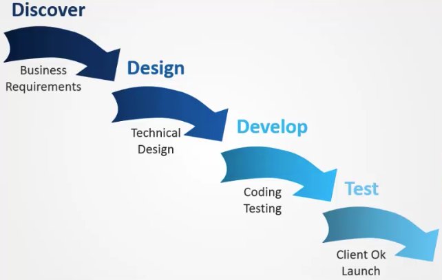

[tensoflow 2.0] 0.머신러닝 이해하기
머신러닝 이해하기
머신러닝, 딥러닝, AI의 차이를 배웠다.
머신러닝의 정의
전통적인 프로그래밍의 절차

머신러닝의 프로그래밍 절차

데이터를 보고 룰을 찾아낸다.
큐브를 돌리는 맞추는 것을 보면 어떤 상황에서도 그 상황에 맞는 룰을 정의해 그 상황을 해쳐 나가도록 행동한다.
이 룰을 가지고 큐브를 맞추는 레고 로봇을 만들었다.

전통적인 룰 베이스 프로그래밍은 사전에 룰을 가지고 프로그램을 만든다.
지금 3x3 의 큐브는 별 문제 없이 동작한다. 하지만 5x5 큐브나 그 이상의 큐브를 맞추기 위해서 룰을 연구해야 하고 다시 프로그래밍 해야 한다.
만약, 이렇게 무한히 많은 경우의 큐브의 경우에는 어떻게 해야할까? 방법이 없다.
하지만 스스로 학습하는 머신러닝 모델을 만들면 시간을 걸리겠지만, 해결법을 찾아낼 것이다.

머신러닝 이해하기
머신 러닝 알고리즘의 종류
- Supervisor learning
- 앞으로 진행할 보스턴 마라톤 기록 예측 같이 라벨이 있는 데이터로 결과 예상
- Unsupervisor learning
- 구글 뉴스 같이 라벨이 없는 데이터를 그룹화
- Reinforcement learning
- 알파고가 학습한 방법
- 요즘 뜨고 있는 학습 방법
- 상, 벌을 가지고 보상을 최대화 하는 방식으로 학습
- 알파고, 탁구 머신 등
회귀(Regression)과 분류 (Classification) 문제
Regression - 회귀
회귀 - 연속된 일련의 값에서 패턴을 예측하는 것
보스톤 마라톤 데이터를 가지고 완주 시간을 예측하는 방법
Classification - 분류
카테고리를 나누는 것.
우리 삶에서 많이 쓰이고 있다.
스팸인지 아닌지. 페이스북에서 내가 선호하는 이미지를 찾는 것
binary classfication만 있는게 아니라 Qualify classification도 있다.
학습 전략 - Data set
Rule base Vs Machine Learning

데이터 셋

데이터를 가지고 가설을 만들고 머신에 학습을 시킨다면 적절한 값을 얻게 될것이다.
전체 데이터를 가지고 학습 시키는 게 아니다.
학습 데이터와 검증 데이터, 테스트 데이터를 가지고 모델을 학습시키고 검증한다.
특이 데이터가 있을 수 있는데 그런 데이터를 걸르기 위해서 검증 데이터가 필요하다. 모델의 신뢰성을 위해 검증을 통해서 계속 최적화해 나갈 필요가 있다.
테스트 셋은 모델을 트레이닝 하는데 참여하지 않는다.